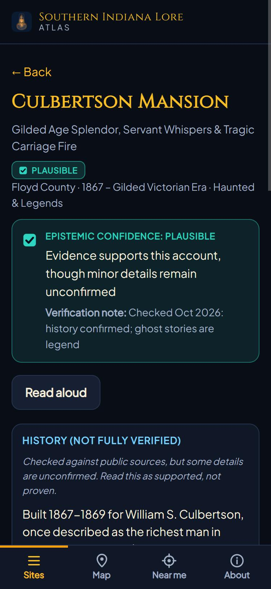

Southern Indiana Lore
Android release · Web betaDiscover nearby history and folklore, with sources and confidence badges so you can judge each story.


Runs on: Android 7+; browser edition for iPhone and desktop. Android tested on an S25 Ultra; other devices remain untested.
Inside the build & known limits
The problem: A phone that helps people notice the history around them.
The build: Offline site data, location alerts, narration, and a browser atlas.
Current limits: GPS alerts are an Android feature. The web atlas needs to stay open for Near me. The map is schematic, and some historical details remain unverified.
Read the verification log ↗